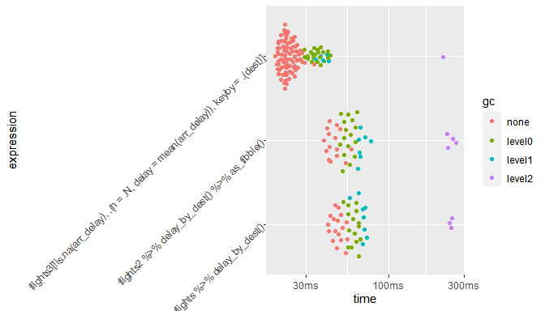

Introduction
Quand on a plus de 100000 lignes dans une table, le package dplyr peut commencer a etre un peu lent, et si on n’est pas motive pour apprendre la syntaxe du package data.table, le package dtplyr peut etre un bon compromis : on tape en dplyr et le package se charge de recoder le tout en data.table. Il profite ainsi de la syntaxe tres naturelle et fluide de dplyr et il se rapproche (sans pouvoir les atteindre) des performances de data.table qui est extremement rapide sur les grosses volumetries (>= 1M lignes).
Les donnees du package nycflights13
# installer aussi ggbeeswarm et nycflights13
library("data.table")
library("dtplyr")
library("dplyr")
library("ggplot2")
# un gros dataframe classique > 300 000 lignes
flights = nycflights13::flights
# le dataframe au format du package dtplyr
flights2 = lazy_dt(flights)
# le dataframe au format du package data.table
flights3 = as.data.table(flights)Le fontionnement “lazy” de dtplyr
# pour voir la syntaxe du recodage en data.table
flights2 %>% filter(!is.na(arr_delay)) %>%
group_by(dest) %>% summarise(n = n(),
delay = mean(arr_delay))
# pour executer le recodage en data.table
resultat = flights2 %>% filter(!is.na(arr_delay)) %>%
group_by(dest) %>% summarise(n = n(),
delay = mean(arr_delay)) %>% as.data.table()
resultatSource: local data table [?? x 3]
Call: `_DT4`[!is.na(arr_delay)][, .(n = .N, delay = mean(arr_delay)),
keyby = .(dest)]
dest n delay
<chr> <int> <dbl>
1 ABQ 254 4.38
2 ACK 264 4.85
3 ALB 418 14.4
4 ANC 8 -2.5
5 ATL 16837 11.3
6 AUS 2411 6.02
# Use as.data.table()/as.data.frame()/as_tibble() to access results
dest n delay
1: ABQ 254 4.381890
2: ACK 264 4.852273
3: ALB 418 14.397129
4: ANC 8 -2.500000
5: ATL 16837 11.300113
---
100: TPA 7390 7.408525
101: TUL 294 33.659864
102: TVC 95 12.968421
103: TYS 578 24.069204
104: XNA 992 7.465726Comparaison des performances
On compare le temps d’exécution :
- du code dplyr avec flights, le plus lent
- du code dtplyr avec flights2
- du code data.table avec flights3, le plus rapide
# pour comparer les temps d'execution
delay_by_dest = function(df) {
df %>%
filter(!is.na(arr_delay)) %>% group_by(dest) %>% summarise(n = n(),
delay = mean(arr_delay))
}
compare = bench::mark(
flights %>% delay_by_dest(),
flights2 %>% delay_by_dest() %>% as_tibble(),
flights3[!is.na(arr_delay), .(n = .N, delay = mean(arr_delay)), keyby = .(dest)],
check = FALSE,
min_time = 3,
time_unit = "ms")
knitr::kable(compare %>% select(expression, min, median, mem_alloc, n_itr))| expression | min | median | mem_alloc | n_itr |
|---|---|---|---|---|
| flights %>% delay_by_dest() | 37.1116 | 41.3234 | 53.4MB | 36 |
| flights2 %>% delay_by_dest() %>% as_tibble() | 32.4037 | 36.3528 | 51.6MB | 43 |
| flights3[!is.na(arr_delay), .(n = .N, delay = mean(arr_delay)), keyby = .(dest)] | 18.1827 | 20.0718 | 21.6MB | 117 |
Le graphique permet de visualiser les temps de calcul
- sans intervention du ramasse-miette generationnel de R (qui a pour role de liberer periodiquement la memoire occupee par des objets devenus inaccessibles par l’utilisateur)
- et avec intervention du ramasse-miette a la generation 0 (le plus frequent, le plus rapide), 1 et 2 (le plus rare, le plus lent).

Ameliorer encore les performances de dtplyr
On peut diminuer le nombre de copies des donnees effectuees avec le parametre immutable = FALSE dans la fonction lazy_dt. Le package pryr permet entre autres d’obtenir l’adresse memoire de chaque objet et de voir si elle change ou non apres une operation, ce qui indique si une copie des donnees a ete effectuee ou si les donnees ont ete modifiees sans deplacement dans la memoire (ce qui est beaucoup plus rapide).
# avec copie : l'adresse memoire change
flights4 = as.data.table(flights)
pryr::address(flights4)
flights4 = lazy_dt(flights4) %>% mutate(delta = arr_time - dep_time) %>% as.data.table
pryr::address(flights4)[1] "0x253e28d8"
[1] "0x2889f058"# pas de copie : l'adresse memoire ne change pas
flights4 = as.data.table(flights)
pryr::address(flights4)
flights4 = lazy_dt(flights4, immutable = FALSE) %>%
mutate(delta = arr_time - dep_time) %>% as.data.table
pryr::address(flights4)[1] "0x29d2d170"
[1] "0x29d2d170"